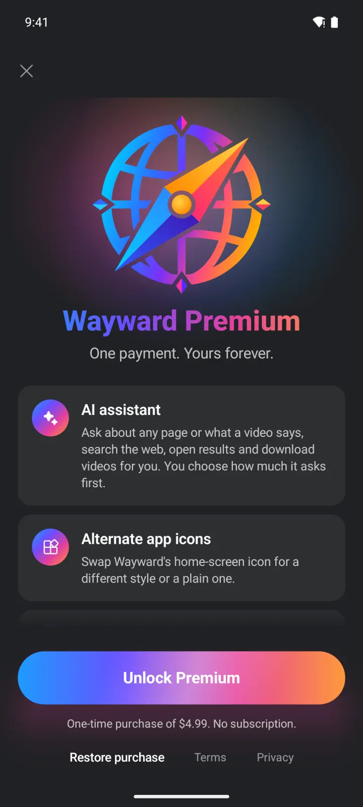
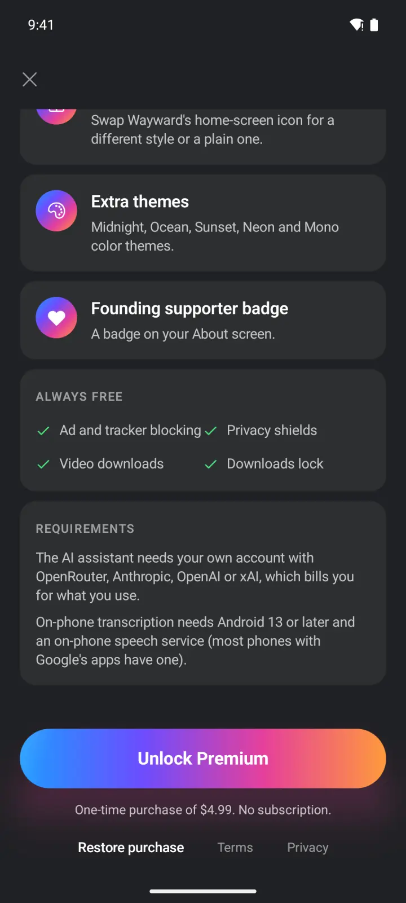
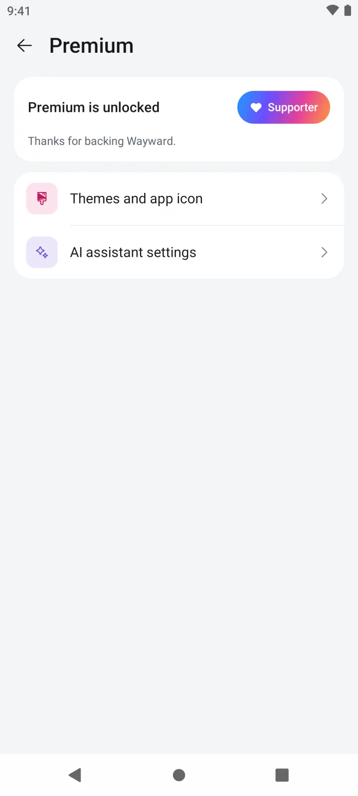
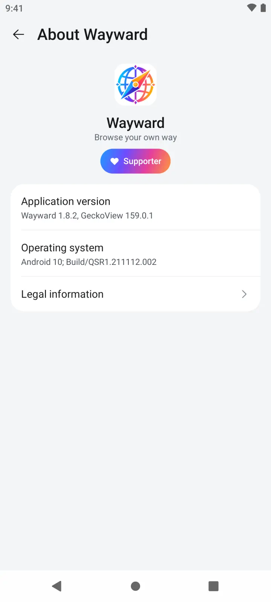

Unlock Premium, or get it back
How-to
Premium unlocks the AI assistant, additional app icons and color themes, and a supporter badge. It's one payment through Google Play, not a subscription. Here's how to buy it, and how to get it back on a new phone or after reinstalling.
See what's included
Open the ⋮ menu and tap Settings > Premium. Until you have Premium, the row says AI assistant, app icons and themes. You also land here when you tap a locked color or icon, or the assistant's button without Premium.
The page, Wayward Premium, lists what you get:
- AI assistant: ask about any page or what a video says, search the web, open results and download videos for you, with your own AI provider account.
- Alternate app icons: a different style of home-screen icon, or a plain one.
- Extra themes: the Midnight, Ocean, Sunset, Neon and Mono colors.
- Founding supporter badge, shown on your About screen.
Further down, ALWAYS FREE lists what never needs Premium: Ad and tracker blocking, Privacy shields, Video downloads and the Downloads lock. REQUIREMENTS says what the extras need, like your own account with an AI provider, which bills you for what you use.


Buy it
- Tap Unlock Premium. The line under it shows the price, in your currency once Google Play answers, and says it's a one-time purchase with no subscription.
- Google Play's own purchase sheet opens. Confirm there, the way you'd pay for any app.
- Wayward shows You're all set and Wayward Premium is unlocked on this device. Tap Start using Premium. Where the buy button was, the Premium page now says Premium is active, with your supporter badge.
Some payment methods take a while to go through. Until they do, the button says Purchase pending…, and Premium unlocks by itself once Google Play confirms it.
Once it's unlocked
Settings > Premium then shows Premium is unlocked, your supporter badge, and shortcuts to Themes and app icon and AI assistant settings. The badge shows on Settings > About Wayward too.


To set up the assistant next, see Set up the assistant with your own key. For colors and icons, see Change the theme, color and app icon.
Get it back on a new phone, or after reinstalling
Premium belongs to the Google account you bought it with.
- Make sure the Play Store on your phone is signed in to that Google account.
- Open Wayward. It checks with Google Play when it starts, and Premium unlocks by itself.
- If it doesn't, open Settings > Premium and tap Restore purchase. Wayward says Checking with Google Play…, and once Play confirms you get the same You're all set.
Premium brings back what you can use, not what you'd picked: choose your icon again, and restore your settings file for the rest (it has your color, but not your icon). See Move Wayward to a new phone.
If it doesn't work
- Connecting to Google Play. Try again in a moment. Wayward hasn't heard back from Google Play yet. Check you're online, wait a moment and tap again.
- Google Play isn't offering Premium to this account right now. Google Play answered, but has no Premium for this account, so trying again won't help. Check the Play Store is signed in to the account you meant to use, and send us feedback if it keeps happening: see Send feedback or report a problem.
- Bought it, but it still looks locked? Tap Restore purchase, and make sure the Play Store is signed in to the account you paid with.